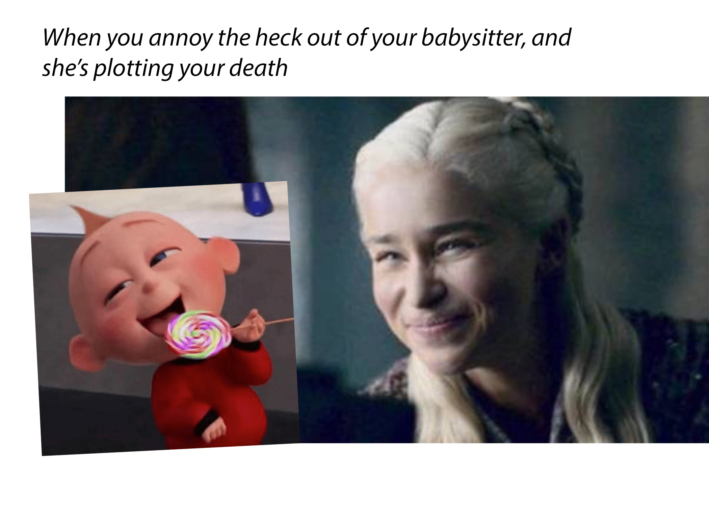

Before taking this class, I did go online, social media, to look at memes. I had no interest for memes, and just went on with my everyday life, going to school, work, and hang out with my friends.
But after doing this meme mashup assignment, I got more interested in what was going on in social media, everyone talks about memes and find them educational. They are now fun and enjoyable to go through.
Original Meme Photos
This meme is a complication I made thinking about how babysitters feel when they are with children they can’t handle. I thought about this, because I remembered a time my grandma would babysit me and I was one of the most annoying children she took care of and she would yell at me, but wouldn’t do anything about it since I was still only a child. I related this concept to cartoons, such as the Incredibles Jack-Jack, the baby, to make it more funny and aligned with the story..
Jack-Jack Meme Link:
https://me.me/i/me-after-iget-my-way-16-hilarious-random-memes-you-f0a850f6bc64404f8aa8a4bbd23fbe6e
Babysitter Meme Link:
https://izismile.com/2019/07/13/the_best_memes_2019_could_muster_39_pics-7.html
This is a group meme partnership we did, the image on the right is my mashup. For this assignment, each group member had to pick out a meme they had found online, share it with one other member and mash them together to create our own unique meme from two other memes we found.
This is my armor-car meme draft. This photoshop assignment was an intro to photoshop, so we used this armor puppet to photoshop onto this image of a street with cars and buildings.